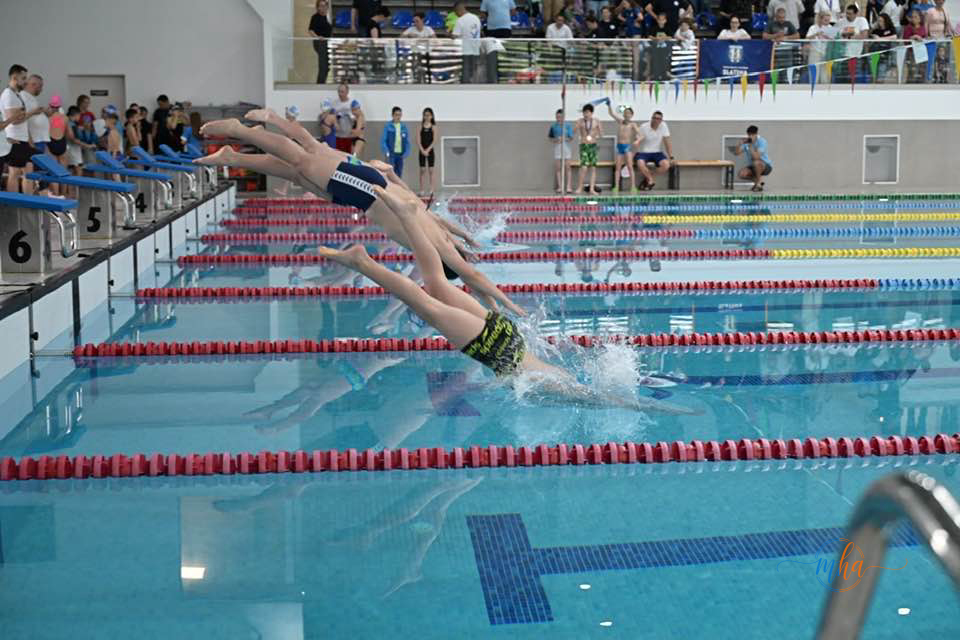
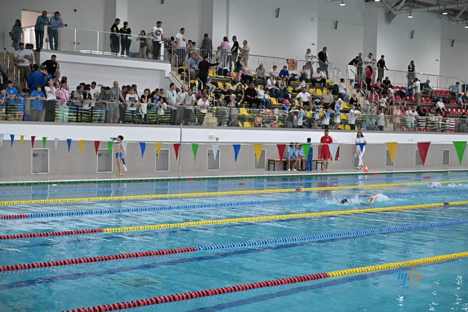
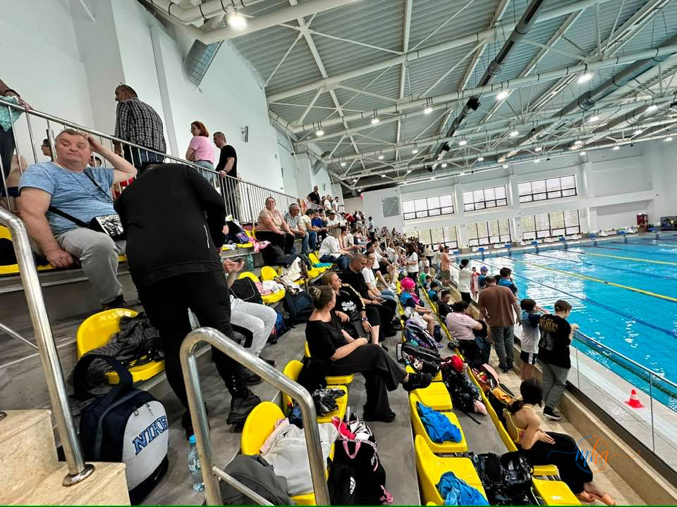
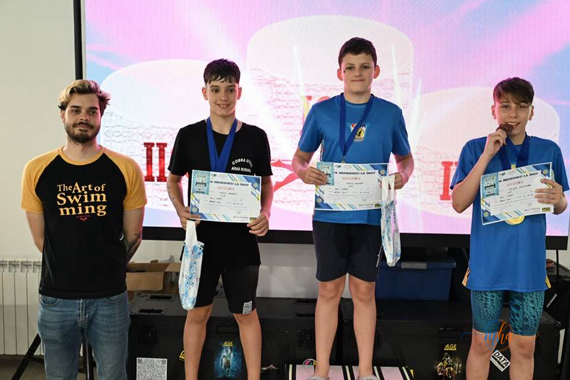
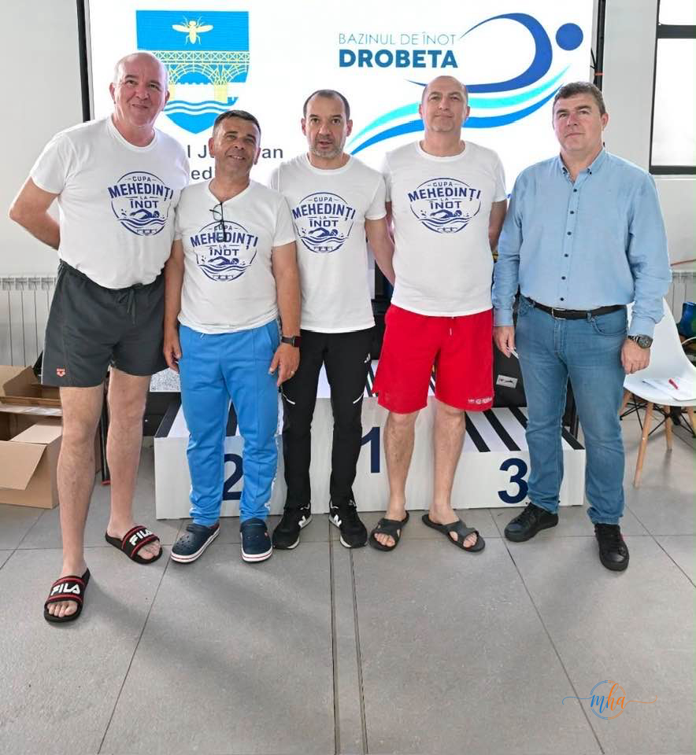
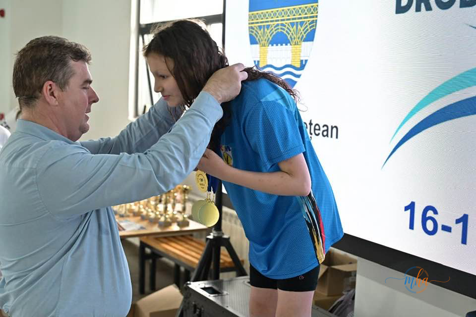
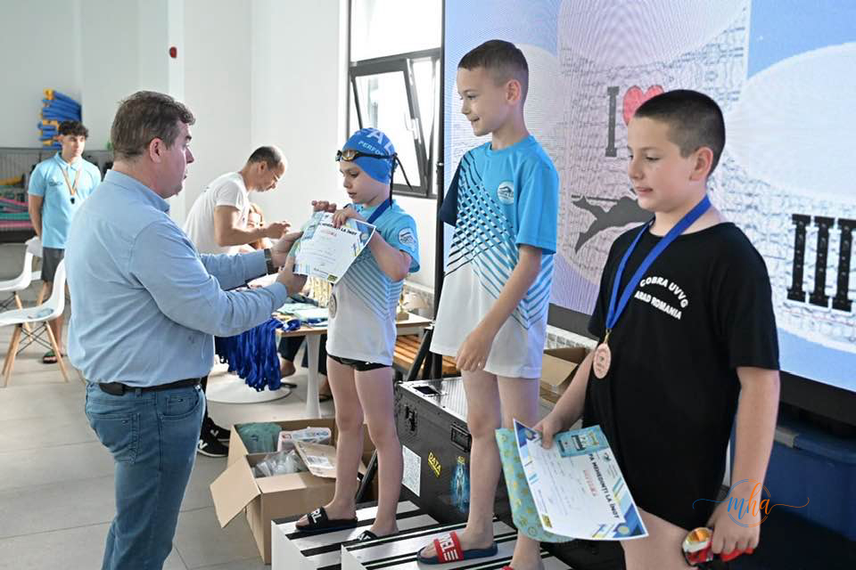

Startul curselor — sportivii se aruncă în bazin la semnalul de start. Foto: CJ Mehedinți
Bazinul de Înot Drobeta a găzduit astăzi o competiție sportivă de excepție: Cupa Mehedinți la Înot, eveniment care a adus față în față copii și tineri sportivi din județul Mehedinți și din mai multe cluburi sportive din întreaga țară.

Tribune pline și bazin în plină acțiune — atmosfera de la Cupa Mehedinți la Înot. Foto: CJ Mehedinți
Bazinul modern din Drobeta-Turnu Severin s-a transformat pentru o zi într-un adevărat centru al performanței juvenile, unde emoțiile, ambiția și spiritul competițional s-au împletit într-un spectacol de neuitat pentru toți cei prezenți în tribune.

Tribunele Bazinului Drobeta, pline de părinți și susținători. Foto: CJ Mehedinți
Robert Glință, alături de tinerii înotători mehedințeni
Unul dintre cele mai importante momente ale competiției a fost prezența lui Robert Glință, campion european la înot și participant la Jocurile Olimpice — unul dintre cei mai valoroși sportivi români în activitate. Prezența sa a reprezentat mult mai mult decât o apariție simbolică: pentru tinerii participanți, Robert Glință este dovada vie că din România poți ajunge pe podiumul european și pe scena olimpică.
„M-am bucurat să văd atâta energie, ambiție și emoție, alături de sportivi, antrenori, părinți și toți cei care contribuie la formarea acestor tineri."

Robert Glință alături de câștigătorii Cupei Mehedinți la Înot. Foto: CJ Mehedinți
Campionul a reprezentat o sursă reală de inspirație pentru concurenții de toate vârstele, demonstrând că performanța în înot este accesibilă și pentru sportivii din județele din sudul României.
Competiție cu cluburi din toată țara
Cupa Mehedinți la Înot a reunit sportivi din mai multe cluburi sportive din țară, ceea ce confirmă că evenimentul a depășit cadrul local și a căpătat recunoaștere națională. Competiția a acoperit mai multe probe și categorii de vârstă, oferind fiecărui participant șansa de a-și testa limitele și de a evolua în condiții de concurs real.
- Valoarea muncii și a antrenamentului constant
- Disciplina — esențială în sport și în viață
- Perseverența în fața dificultăților
- Respectul față de adversar și fair-play-ul
- Încrederea de a-și depăși propriile limite
Bazinul Drobeta — investiție pentru performanța sportivă a județului
Găzduirea unor astfel de competiții de anvergură națională confirmă că Bazinul de Înot Drobeta a devenit exact ceea ce s-a dorit la momentul inaugurării: un spațiu modern unde pasiunea pentru sport și performanța sportivă prind contur pentru generațiile tinere din Mehedinți.
Infrastructura sportivă modernă este esențială pentru dezvoltarea tinerilor sportivi. Fără bazine omologate, fără condiții adecvate de pregătire, talentele din județele mai mici rămân nevalorificate. Cupa Mehedinți la Înot demonstrează că investițiile în sport aduc rezultate concrete — atât în competiții, cât și în formarea caracterului tinerilor.

Organizatorii Cupei Mehedinți la Înot — tricouri oficiale ale competiției. Foto: CJ Mehedinți
Felicitări pentru toți participanții
Sportivii, antrenorii și părinții care au susținut fiecare cursă din tribune au făcut împreună din această zi o sărbătoare a sportului. Indiferent de rezultate, fiecare participant care a sărit în bazin a câștigat ceva mai valoros decât o medalie: experiența competiției, curajul de a încerca și bucuria sportului practicat la cel mai înalt nivel accesibil vârstei lor.

Momentul premierii — emoție și mândrie pentru fiecare medalie acordată. Foto: CJ Mehedinți

Înmânarea diplomelor și medaliilor câștigătorilor Cupei Mehedinți la Înot. Foto: CJ Mehedinți
- Competiție: Cupa Mehedinți la Înot 2026
- Locație: Bazinul de Înot Drobeta, Drobeta-Turnu Severin
- Participanți: Cluburi sportive din Mehedinți și din toată țara
- Invitat special: Robert Glință — campion european, participant JO